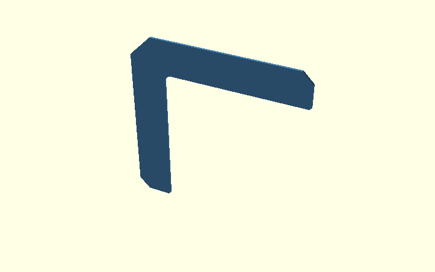
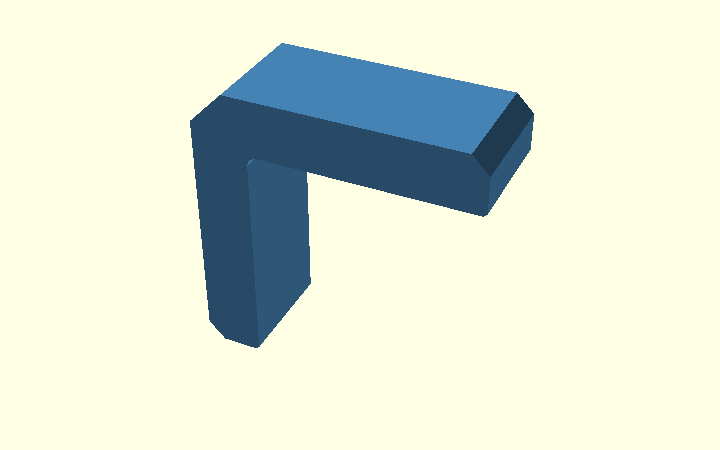
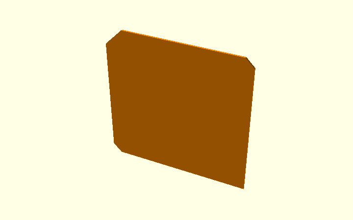
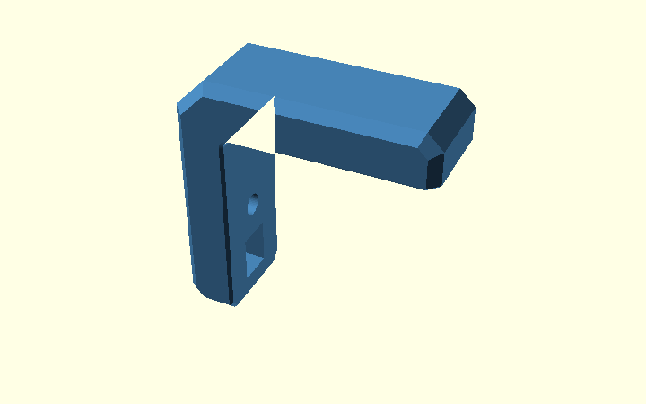

Chamfers on the Corner Bracket — from 2D vertices to 3D relief
This guide follows the actual v0.1 model, with ten illustrations
generated from chamfer_explained.scad.
You can open that file in OpenSCAD and select chamfer_step to inspect
each stage. The examples use the real model modules whenever possible.
Three different features are easily confused:
| Setting | Default | Which edge changes? | Operation |
|---|---|---|---|
c |
3 mm | Ends of both arms | Coordinates in the 2D polygon |
ce |
6 mm | Large outside corner joining the arms | Coordinates in the 2D polygon |
cs |
2 mm | Long outside edges of the printed side faces | offset() + hull() + intersection() |
ef |
0.6 mm | Printed-side contact edges and junctions with the outer bevel | Two local opening hulls, plus small local correction hulls |
These operations run at different stages. c and ce are part of
the initial profile, cs changes the 3D side edges, and
ef removes printing clearance near both side faces.
1. Begin with the plain L outline
An ordinary L-shaped polygon() starts with sharp ends and a sharp
outer corner. This is a teaching reference, not the final model.

2. Cut the arm ends and large outside corner in 2D
The production sharp_profile() draws the arm-end chamfers and the
large outside corner directly into the polygon. In the same 2D step,
inside_corner_2d(r_in) adds the separate concave radius using a
square-minus-circle shape. Its construction is explained in the
Polygon Guide.

The following actual source coordinates control the 45° cuts:
openscad
[armH, t-c], // one side of the top arm's end chamfer
[armH-c, t], // other side: c mm back
[-t+ce, t], // first point at the large outside corner
[-t, t-ce], // second point: ce mm down
[-t, -armV+c], // vertical arm-end chamfer
[-t+c, -armV] // second point at that end
For the defaults, c = 3 means a 3 × 3 mm 45° cut at each
arm end. Likewise, ce = 6 creates a 6 × 6 mm 45° cut across
the large outside corner. No hull() is involved here.
The tiny ef corrections at the wood-facing arm tips are
also represented by the tip_top/tip_vert point lists.
They are distinct from these larger cuts.
3. Extrude the finished profile across the width
The rounded L becomes a 20 mm wide solid through
linear_extrude(height = W, center = true). Rotation puts the
width along the Y axis, so the broad side faces are at
Y = -10 and Y = +10.

openscad
rotate([90,0,0])
linear_extrude(height=W, center=true)
profile();
The side-face edges are still square. We now create the 2 mm bevel along those outside edges.
4. Why make a convex outer outline?
The temporary outer_shape() contains the entire outside perimeter
of the bracket but fills the open space between its arms. This may
look wrong, but the helper is not intended for printing.

An offset() applied directly to the original L would also change
its concave inside corner and the plywood contact region. Instead, we
use the outer envelope solely to restrict the outside edges, then
recover the original L by intersection.
5. Prepare the two inputs to hull()
The blue extrusion keeps the full outside outline, but is only
W-2*cs = 16 mm wide: Y = -8 ... +8.
The orange extrusion extends across the full 20 mm width,
but offset(delta=-cs) makes its X/Z outline 2 mm smaller
all around. Its outer faces are at Y = -10 and Y = +10.

openscad
rotate([90,0,0]) {
// Full outline, narrower Y range
linear_extrude(height=W-2*cs, center=true)
outer_shape();
// Inset outline, full Y range
linear_extrude(height=W, center=true)
offset(delta=-cs) outer_shape();
}
This is different from two stacked flat plates: the two extrusions overlap in the centre and have different side-face extents.
6. Hull joins the two outside envelopes
hull() wraps both extrusions and connects their outer boundaries.
From the unchanged middle at Y = ±8 to the smaller outline at
Y = ±10, it produces a sloping 2 mm side-edge transition.

openscad
rotate([90,0,0]) hull() {
linear_extrude(height=W-2*cs, center=true)
outer_shape();
linear_extrude(height=W, center=true)
offset(delta=-cs) outer_shape();
}
The envelope is convex, so the inside of the L is filled in. This is expected and still not a printable part.
7. Intersect the hull with the real L
intersection() keeps only the material shared by the true
extruded L and the chamfer envelope. This removes the unwanted
filled-in region and retains the actual concave inside radius.

openscad
intersection() {
profile_extrusion();
side_chamfer_env();
}
This is the role of body() in the model. Changing cs changes
the side-edge bevel; it does not replace the profile's c,
ce or r_in.
8. Apply hull-based elephant-foot relief
The bracket rests on a side face while printing. Bulging first
layers could prevent the L's inner surfaces from seating against the
plywood. The parameter ef = 0.6 mm removes material near the
wood-facing edges at Y = -10 and Y = +10.
Left: body() with only the outer side-edge bevels.
Right: chamfered_body() after the new inner-opening relief
has been subtracted. Neither has nut holes yet.

Instead of moving separate triangular cutters along each line and revolving another cutter around the arc, the production code:
- Builds the empty area between the arms with
inside_opening_2d(). This convex opening has a straight boundary along both plywood faces and a circular inner transition. - At
Y = ±9.4, uses that original 2D opening; atY = ±10, expands it by 0.6 mm withoffset(delta=ef). - Uses one local hull per side to connect those two profiles.
- Adds two more short hulls per printed side where the relief meets
the diagonal
csbevels at the arm ends. Those junctions otherwise leave a visible flat termination at the corner. - Subtracts the opening hulls and local correction hulls from the outside-chamfered
body with
difference().
Why not just one hull from one printed side to the other? A global convex hull would bridge both expanded ends, enlarging the opening through the whole central width. Two local hulls avoid that mistake.
openscad
module chamfered_body() {
difference() {
body(); // outside: cs hull bevel
if (ef > 0) {
inside_relief_envelope(); // inner plywood-facing edges
relief_corner_miters(); // diagonal arm-tip junctions
}
}
}
Close-up: the corner where two chamfers meet
The broad inner-opening hulls by themselves leave a small unwanted
termination where the elephant-foot allowance meets a diagonal outer
side-edge bevel. This is hard to see in a full model view and barely
changes the overall mesh volume. A separate small triangular profile
gets swept along each local diagonal with hull().

Left: inner-opening hulls only. Middle: isolated small diagonal correction volume. Right: both the opening relief and local correction applied. The figure crops the horizontal arm-tip corner for inspection; the production model also handles the opposite side and the other arm.
A dedicated CI test clips the symmetric difference with the former
model to just these four junctions. It verifies that adding the
local correction removes at least 90% of the local defect volume across the
supported nonzero cs/ef combinations. This supplements the
whole-model 0.1% volume tolerance.
The diagrams locate the small 45-degree contact-edge relief:


9. Final bracket and regression checks
The final bracket() removes the nut access windows and bolt holes
from chamfered_body().

The earlier single-hull straight-bar experiment
is still documented, but the actual L bracket has now changed:
the old ef_cuts() wedges were removed. A regression test compares
the complete new and old solids at several cs, ef and r_in
settings. Expect small differences at intersections of the old
individual cutters; the new construction is an intentional geometric
refactor, not a physical fit or strength verification.
For the mathematical principle and its rectangular-bar introduction, see the separate Hull Guide.